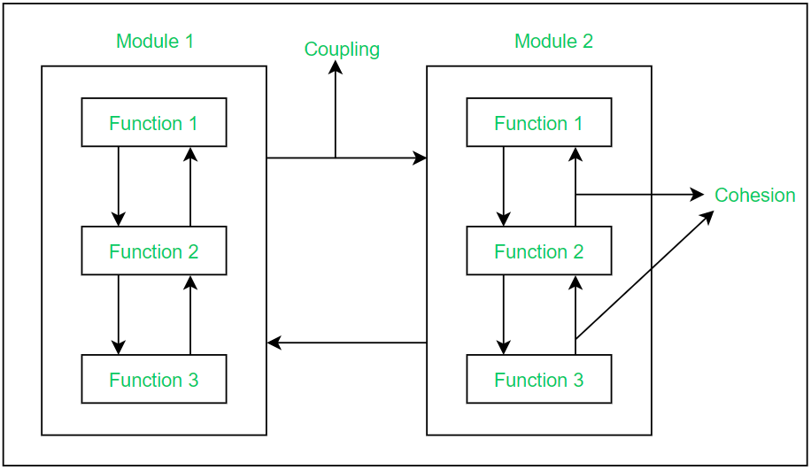

5.6 Modularization
Modularization is the design principle of dividing a software system into well-defined, conceptually simple, and independent units (modules) that interact through well-defined interfaces. It is the foundation of manageable software architecture and is essential for teams working on large systems.

What is a module?
- A module is a building block of the system — a function, procedure, class, or component that handles a specific task or feature.
- Modules are combined to form the complete system; each module should have a clear, well-defined responsibility.
- Modules communicate through interfaces — passing data or control signals without exposing internal implementation.
Modular architecture definition
- In a modular architecture, the system is composed of well-defined, conceptually simple, and independent units.
- Units interact only through well-defined interfaces, keeping internal details hidden.
- Modularity reduces complexity by letting developers focus on one module at a time.
Advantages of modular architecture
- Easy to understand and explain: Each module has a clear purpose, making the overall system easier to comprehend.
- Easy to design and document: Modules can be designed and documented independently before integration.
- Easy to code and test: Each module can be implemented and unit-tested in isolation.
- Easy to maintain: Changes to one module are localised and do not require rewriting the entire system.
Effective modular design
- Effective modular design requires both high cohesion (elements within a module work together) and low coupling (modules depend minimally on each other).
- Modularity is subdividing a system into smaller parts so they can be created, tested, and maintained independently.
- Poor modularization — modules that are too large, too tightly coupled, or have mixed responsibilities — leads to fragile, hard-to-maintain systems.
- See §5.10 for the quality metrics that evaluate modular design.
Modularity across design levels
- At architectural level, modularity means decomposing the system into major subsystems or components.
- At detailed level, modularity means breaking each component into functions, classes, or procedures.
- Structure charts (§5.7) visually represent modular hierarchy.
- Object-oriented design (§5.15) achieves modularity through classes and objects.
Exam question — Modularization
Q: Define modularization. List advantages of modular architecture. What makes modular design effective?
Model answer points:
- Define: system divided into independent units with well-defined interfaces.
- Four advantages: easy to understand, design/document, code/test, maintain.
- Effective design = high cohesion + low coupling within/between modules.
- Modules are building blocks; each handles one specific task.